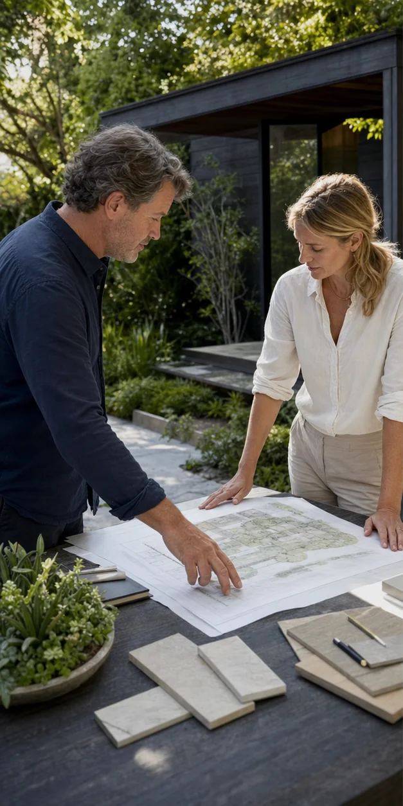

Organize the Project Brief
Bring property context, priorities, timing, visual references, and practical questions into one clearer landscape design request.
Verdeon is an independent information and provider-matching platform built to help property owners explore landscape design possibilities with more structure.


About Verdeon
Outdoor projects bring together space, planting, access, materials, views, comfort, timing, and long-term care. Verdeon helps property decision-makers organize those connected questions before individual solutions take over.
The platform is designed for homeowners, businesses, and property stakeholders who want to understand possible scope, compare planning approaches, and learn what information independent professionals may need.
Explore design optionsHow Verdeon Helps
Verdeon helps property owners structure project information, understand possible planning directions, and explore relevant independent professional options where available.
Bring property context, priorities, timing, visual references, and practical questions into one clearer landscape design request.
Understand how planting, patios, paths, lighting, privacy, access, visualization, and project phasing may relate to one another.
Explore relevant independent professional categories where participation is available, while retaining control over evaluation and final decisions.

Property Owner Feedback
Real feedback can help explain which parts of the landscape planning experience property owners find especially useful.
Why Verdeon
Verdeon helps organize outdoor ideas into structured planning directions, making it easier to understand priorities, compare design options, and move forward with more clarity.
Review layout potential through property context, access, sunlight, circulation, existing features, and practical outdoor use.
Request a ConsultationBring planting, patios, walkways, lighting, privacy, and gathering areas into one balanced landscape concept.
Explore ServicesSeparate immediate improvements from future stages while keeping the overall outdoor vision more coordinated.
Start Your RequestWho Verdeon helps

Explore outdoor rooms, arrival, privacy, planting, family use, and phased improvements.

Consider shared use, accessibility, identity, circulation, and operational expectations.
Explore Landscape Design Services
Explore planning directions for homes, gardens, patios, planting, lighting, and outdoor environments that need structure, clarity, and long-term visual balance.
Transparency
Verdeon helps organize information and possible connections. It does not select providers on your behalf, supervise their work, or guarantee outcomes.
Provider categories, experience, scope, and participation differ by location.
Property owners remain responsible for evaluating credentials, insurance, contracts, and suitability.
Codes, structure, drainage, grading, utilities, and electrical work require appropriate professionals.
Business Opportunities
Start with context
A useful request can begin with a few priorities and honest questions.